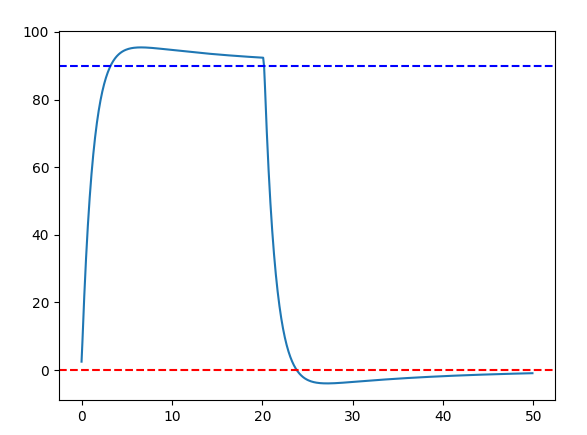
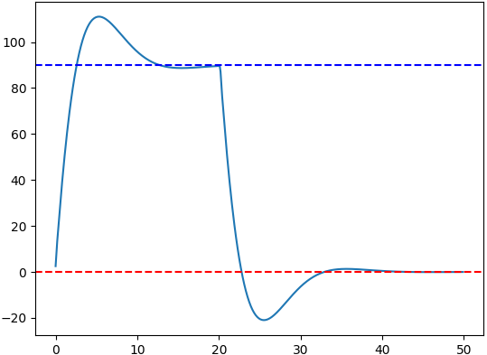

Computer vision control for robotics
A framework for controlling a robotic arm with computer vision. Robotics is moving toward integrating vision and AI into physical systems, so I set out to build a system that turns the motion of a user’s hand into arm control. I split it into mini-projects, each a milestone and each teaching one fundamental concept.
1. 2D inverse kinematics
Forward kinematics converts joint angles into an endpoint position. That’s of limited use in practice, because it’s more useful to choose where the endpoint should be and solve for the angles. That is inverse kinematics.
I implemented it in Python and visualized it with Matplotlib. You give the arm a start pose and a target, and it solves for the joint angles and animates into position.
2. PID controller
Joints driven by servos or motors need a controller that gives stable, tunable motion. A PID controller takes a setpoint and the current value. The proportional term responds to the current error, the integral term to the accumulated error, and the derivative term to the error’s rate of change. Their sum drives the process, and tuning the three gains gives smooth control.
I built it in Python and plotted responses for different P, I and D values, starting at 0 with a setpoint of 90 and then changing it to 0.


3. Hand tracking
MediaPipe’s Pose Landmark Detection tracks the user’s hand in real time. Pressing a button zeros an origin at the hand’s current position, and the program tracks the vector from that origin to the hand. That vector is meant to control the robot’s endpoint. I extended it with a motion-capture mode that records a path with its timing, so speed is preserved.
4. Smoothing and spline interpolation
Recorded hand data is noisy. An exponential moving average (EMA) filter biases toward the previous value, so inaccurate spikes have less influence.
I then fit a smoothing spline, a curve that balances closeness to the data against its own curvature rather than passing through every point. The result is a function of time for the recorded 3D path.
5. Physics simulation
To close the loop, I used PyBullet to simulate a robotic arm in a physics environment. I used a pre-built arm model and programmed it to follow the recorded path.